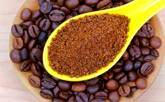
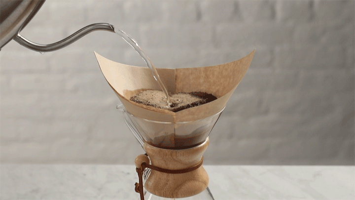

El café es originario de Etiopía donde en el siglo XI se encontraron los primeros cafetos, el árbol del café, y se descubrieron las propiedades de las semillas encerradas en su fruto. Actualmente el café se cultiva en muchas partes de las zonas tropicales y subtropicales de África, América y Asia.
El café en Hidalgo. El café criollo (arábiga) es cultivado con mano de obra familiar en terrenos que no van más allá de las dos hectáreas. Los inicios de la producción en la región datan a mediados del siglo XX, pero fue hasta los años 80 que tuvo un auge importante.
En el estado existen tres regiones cafetaleras en donde se producen cafés de excelente calidad, se trata de la región Otomí-Tepehua, la Sierra Gorda y la Huasteca Hidalguense.
Un café de especialidad es aquel cultivado y producido bajo estrictos controles de calidad, donde se conoce toda la historia del grano, como su origen, zona de cultivo, altura, variedad, recolección, humedad, proceso y tipo de tostado.
El café se muele en un molino hecho de la rama de un árbol llamado otate con el cual se muele hasta hacerse polvo.
Lo siguiente es:
El café en polvo se pone en agua hirviendo y se deja hervir por 7 minutos.
Cuando el agua con el café hierve, se le agrega un cuarto de piloncillo sólido para que no quede tan amargo ni tan dulce. Pasado 2 minutos del agregado, se saca del fuego y ¡a disfrutar del café!
----->----->
Se realizan importantes trabajos de campo para poder llevar a cabo el proceso completo de la producción de café, ya que su proceso inicia con el corte de la cereza, seguido de remover la piel del grano para poder proceder al secado del mismo, así como darle el toque final del tostado y molido.
Una vez realizado el proceso, se pone al mercado de acuerdo a como se demande, pulpa o molido listo para servir en la taza.
Los cafetales se encuentran en zonas de cierta altitud, aunque depende de la variedad cultivada. Además, para que los cafetos tengan una buena producción de café, es necesario que las temperaturas se mantengan entre los 18 ºC y los 24 ºC durante todo el año. Los plantones se trasplantan preferentemente durante la época de mayor humedad, ya que necesitan de agua para arraigarse y crecer. Los cafetos deben tener como mínimo unos 2 metros de separación entre hileras y un metro de distancia entre uno y otro dentro de la hilera. Esta es la densidad en un cafetal estándar. El sol y la lluvia son factores importantes para el crecimiento y salud de los cafetales en el proceso del café. La lluvia debe ser constante con precipitaciones repartidas a lo largo del año. En lo que se refiere al sol, con más de 1800 horas de exposición directa al año, los cafetales necesitan más agua y aumenta el riesgo de enfermedades y plagas. Por eso, en algunas zonas se cultivan los cafetos a la sombra.